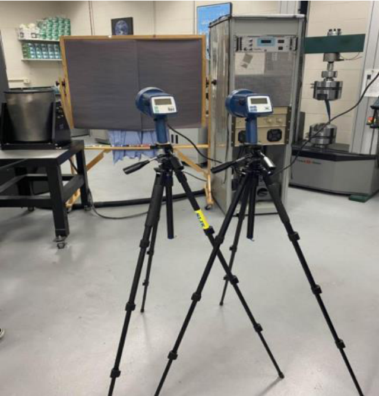
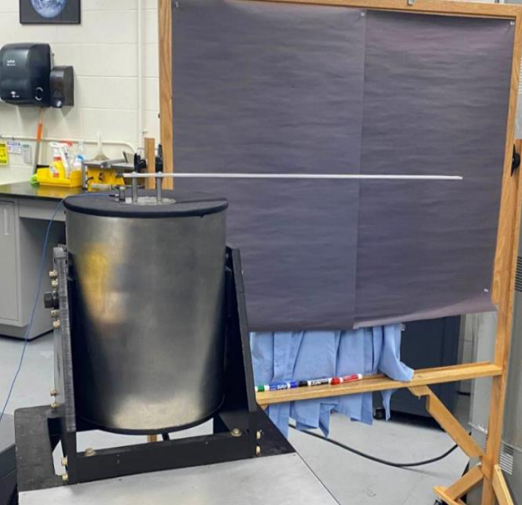

Experiment Overview
When a structure’s natural frequency matches the frequency of an applied periodic load, resonance occurs — and loads can build catastrophically. This principle destroyed the Tacoma Narrows Bridge in 1940 through aeroelastic flutter and drives flutter clearance testing on every new aircraft. This lab experimentally determined the resonance frequencies and mode shapes of aluminum beams using an electrodynamic shaker, providing direct experience with the vibration testing methods used in structural qualification programs.
- Measure resonance frequencies for the first 3 modes of a short beam (761 mm) and 4 modes of a long beam (1275 mm) of Al-6061-T651
- Use three independent measurement methods simultaneously: sine generator readout, ICP accelerometer/oscilloscope, and digital stroboscope
- Measure nodal positions at each mode using the stroboscope to “freeze” the vibrating beam
- Compare measured frequencies and nodal positions against Euler-Bernoulli beam theory predictions


